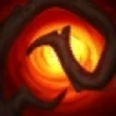
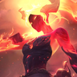
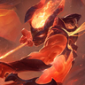
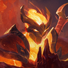
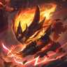

롤토체스 지옥불 특성 효과, 화상·상처 3초 적용과 중첩 문구 정리
롤토체스 지옥불 특성 설명을 읽다 보면 다른 화상 효과와 중첩된다는 문장에서 한 번쯤 멈칫하게 되는데요. 이 한 줄이 대체 무슨 뜻인지, 오늘은 그 문장부터 풀어 볼게요. 패치 18.5b 기준(2026.10.25 조회)으로 지옥불이 적에게 뭘 걸어 주는지, 붉은 덩굴정령 같은 다른 화상이랑은 어떤 관계인지 차근차근 짚어 볼 거예요.
롤토체스 지옥불 특성, 단계와 효과 한눈에
지옥불은 2·3~4·5~6·7 이상 네 구간으로 켜지는 특성이고, 지옥불 챔피언이 피해를 입히면 적에게 3초 동안 화상과 상처를 적용해요. 롤체지지에서는 이 네 구간을 동·은·금·금 색으로 구분해서 보여 줘요.
특성 아이콘에 올려 보면 구간별 설명을 바로 볼 수 있어요.
화상은 매초 대상 최대 체력의 일정 비율만큼 고정 피해를 주는 효과고, 상처는 대상의 체력 회복량을 줄이는 효과예요. 지옥불 챔피언이 피해를 입히면 이 둘이 한 묶음으로 붙기 때문에, 특성 설명에도 화상과 상처가 같이 적혀 있어요.
지옥불 화상 중첩, 붉은 덩굴정령과 같이 걸리면
지옥불 화상은 게임 안 특성 설명(툴팁)에 «지옥불 화상 효과는 다른 화상 효과와 중첩됩니다»라고 적혀 있어요.
붉은 덩굴정령(곡궁 + 곡궁)은 기본 공격과 스킬로 적에게 화상과 상처를 거는 아이템이에요. 저는 이 아이템이 문장 속 다른 화상 효과의 대표 사례라고 읽었어요. 먼저 지속시간이 달라요. 지옥불은 3초, 붉은 덩굴정령은 5초예요. 걸리는 조건도 달라서 지옥불은 피해를 입힐 때, 붉은 덩굴정령은 기본 공격과 스킬이 닿을 때 걸려요.

붉은 덩굴정령 아이콘이에요.
이미지 출처: 라이엇 게임 데이터(CommunityDragon) · 네이버 본문엔 받아서 재업로드 권장
정리하면 지옥불은 피해를 입히면 3초 동안 화상·상처를 적용하고, 붉은 덩굴정령은 기본 공격·스킬로 5초 동안 화상 1%·상처 33%를 걸어요. 찬란한 붉은 덩굴정령은 같은 5초에 화상이 2%로 올라가고 상처는 33% 그대로예요.
화상이 붙은 적 유닛은 전투 화면에서 바로 눈에 띄어요.
두 화상이 한 대상에 겹친다는 것까지는 문장으로 알 수 있어요. 다만 아래 네 가지는 아직 확인되지 않아서 합산 수치는 적지 않을게요.
· 중첩이 정확히 어떻게 계산되는지(피해 합산인지, 지속시간 갱신인지, 붉은 덩굴정령과 동시에 걸리면 어떻게 되는지)
· 화상 피해 1/1/3/4%가 2·3~4·5~6·7+ 구간에 각각 어떻게 맞는지(패치노트에는 이 순서로만 나와 있어요)
· 구간별 상처 %
· 3·5·7 구간 상점 슬롯 점화 개수는 아직 숫자가 안 나왔어요
확인되면 값을 채워 넣을게요.
롤토체스 지옥불 챔피언 6종과 상징·아이템 정리
지옥불 챔피언은 아칼리·바루스·쉔·아무무·케넨·럭스(지옥불) 여섯이고, 상징은 뒤집개 + 곡궁으로 만들어 장착하면 지옥불을 얻어요. 아래 표는 게임 데이터 기준이에요.
| 이름 | 코스트·조합 | 함께 붙은 특성·효과 |
|---|---|---|
 아칼리 | 1코스트 | 지옥불·적응가·약탈자 |
 바루스 | 1코스트 | 지옥불·속사포 |
 쉔 | 2코스트 | 지옥불·엄호대 |
| 아무무 | 4코스트 | 지옥불·전쟁기계 |
 케넨 | 5코스트 | 지옥불·처형자 |
| 럭스(지옥불) | 5코스트 | 지옥불·화신. 스킬은 최후의 섬광이고, 지옥불 추가 효과로 처치 관여당 마나 10을 회복해요 |
| 지옥불 상징 | 뒤집개 + 곡궁 | 장착 시 지옥불 특성 획득 |
| 붉은 덩굴정령 | 곡궁 + 곡궁 | 5초 동안 화상 1%·상처 33% |
이미지 출처: 라이엇 게임 데이터(CommunityDragon) · 네이버 본문엔 받아서 재업로드 권장
코스트는 1·1·2에 4·5·5라서 낮은 쪽과 높은 쪽이 딱 반반이에요.
재료는 곡궁에서 갈려요. 손에 곡궁이 하나뿐이고 뒤집개가 있다면 지옥불 상징 쪽으로 가세요. 곡궁이 두 개 모였다면 붉은 덩굴정령을 만들어 화상 아이템 쪽으로 가는 길도 있어요. 그래서 조합하기 전에 곡궁 수부터 세어 보시는 걸 추천드려요.
지옥불 패치 변화, 18.2 상향과 18.3 하향
지옥불의 화상 피해는 패치 18.2에서 올랐다가 18.3에서 다시 내려가서 지금은 1/1/3/4%예요.
| 패치 | 적용일(롤체지지 표기) | 지옥불 화상 피해 |
|---|---|---|
| 18.2 | 2026.09.10 | 1/1/3/3.5% → 1/1/3.5/4.5% |
| 18.3 | 2026.09.23 | 1/1/3.5/4.5% → 1/1/3/4% |
| 18.3b~18.5b | — | 공식 패치노트에서 지옥불 변경 항목은 찾지 못했어요 |
18.2 공식 노트에는 «지옥불의 높은 구간도 상향되니, 지옥불 리롤 조합을 한번 노려보세요»라는 문장이 있었어요. 올려 준 쪽이 높은 구간이라 리롤로 지옥불을 높게 키우는 조합을 권한 거예요. 이어 18.3 공식 노트는 «사냥꾼, 엄호대, 기원자 그리고 지옥불 하향은 모두 최고 특성 구간에 적용됩니다»라고 적었어요. 패치노트에는 네 값이 1/1/3/4% 순서로만 나와요. 높은 구간에서 한 번 오르고 한 번 깎인 흐름이라고 보시면 돼요. 같은 18.3 노트에서 엄호대도 하향됐는데, 쉔이 지옥불과 엄호대를 함께 갖고 있어서 쉔은 두 특성이 한 노트에서 같이 하향된 챔피언이기도 해요.
자주 묻는 질문
Q. 붉은 덩굴정령 말고 화상을 거는 게 또 있나요?
4코스트 챔피언 덩굴정령의 우두머리 표식(롤체지지 표기는 레드 버프)이 기본 공격 때 적에게 1% 화상을 적용해요. 체력 회복량 4%도 같이 붙어 있는데, 18.5 본편에서 4%에서 5%로 올렸다가 18.5b(10월 23일 추가 패치)에서 5%에서 4%로 되돌렸어요.
Q. 럭스는 전부 지옥불 챔피언인가요?
아니에요. 지옥불 특성이 붙는 건 럭스(지옥불) 하나뿐이고, 다른 변형 럭스는 지옥불이 아닌 다른 특성을 가져요. 럭스(지옥불)는 스킬 최후의 섬광에 처치 관여당 마나 10 회복이라는 지옥불 전용 추가 효과가 붙어 있어요.
Q. 지옥불 손도끼도 지옥불 특성이랑 관련 있나요?
지옥불 손도끼는 별개의 유물이에요. 설명은 기본 공격 시 장착 유닛 최대 체력의 3% 추가 물리 피해, 그리고 잃은 체력 1%당 공격 속도 1.5%가 전부고 화상·상처 문구는 없어요.
Q. 지옥불 화상 이펙트가 안 보이던 건 버그였나요?
패치 18.2 버그 수정에 «지옥불 유닛의 화상 시각 효과가 이제 정상적으로 표시됩니다»라는 항목이 있었어요. 표시 문제는 그 패치에서 고쳐졌다고 보시면 돼요.
Q. 지옥불은 지금 얼마나 쓰이고, 성적은 어떤가요?
롤체지지에서 마스터 이상 랭크 판을 최근 이틀 치로 모아 보니 2단계가 가장 많이 쓰였어요. 패치 18.5b 판이고 10월 25일 기준이에요. 5·7단계는 표본이 작아 참고치로만 보세요.
| 지옥불 단계 | 등장률 | 평균 등수 | 표본 |
|---|---|---|---|
| 2 | 20.00% | 4.31 | 65,109 |
| 3 | 2.83% | 4.27 | 9,222 |
| 5 | 0.60% | 4.08 | 1,958 |
| 7 | 0.15% | 3.58 | 487 |
지옥불 켤 때 볼 것
제 해석으로는 지옥불이 혼자 완결되는 특성이라기보다 다른 화상과 겹친다는 문장이 핵심이에요. 그래서 붉은 덩굴정령 같은 화상 아이템이 손에 들어온 판이라면 지옥불과 같이 생각해 볼 만하고, 그런 아이템이 없다면 통계의 평균 등수를 먼저 보는 게 좋아요. 2단계가 20%로 제일 많이 쓰이는데 평균 등수는 4.31이라, 많이 보인다고 강하다는 뜻은 아니에요. 7단계는 평균 3.58로 가장 좋아 보이지만 표본이 487판뿐이라 아직 결론 내기엔 일러요. 다음 패치에서 1/1/3/4%가 그대로인지만 한 번 더 봐 주세요. 패치 바뀌면 다시 정리해 둘게요~
✔ 롤토체스 같이 보기 좋은 내용
· 롤토체스 기원자 아리 조합 아이템 정리, 특성 빌드까지 한 번에
· 롤토체스시즌18 싸움꾼 마스터 이 렝가덱 사용법 공략
· 롤토체스 사냥꾼 시비르 덱 추천 — 점유율 2위 강세덱, 특성 9개 한 번에 켜는 조합
참고한 곳
· 라이엇게임즈 공식 — 전략적 팀 전투 패치 18.2 노트
· 라이엇게임즈 공식 — 전략적 팀 전투 패치 18.3 노트 (조회 2026.10.25)
· 라이엇게임즈 공식 — 전략적 팀 전투 패치 18.5 노트 (18.5b 추가 패치 포함)
· 롤체지지(lolchess.gg) 통계·게임 데이터 — 공식 아님, 조회 2026.10.25